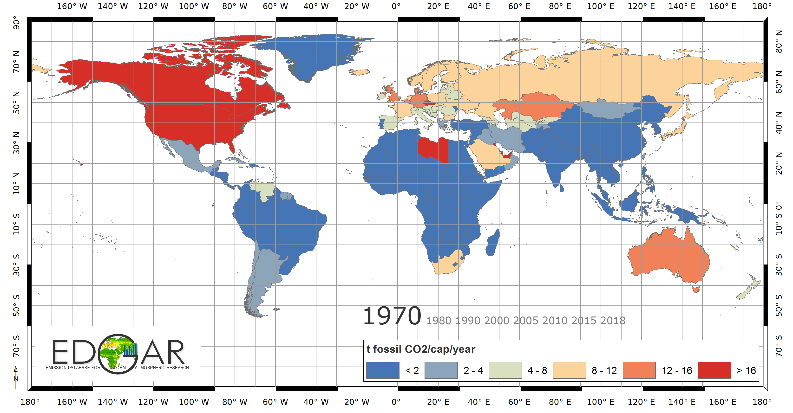

La energía renovable es una fuente de energía sostenible y no contaminante que se obtiene a partir de recursos naturales renovables. Al contrario de las fuentes de energía fósiles como el petróleo, el gas y el carbón,
que son limitados y tardan millones de años en formarse, los recursos de energía renovable son inagotables y se regeneran constantemente. Algunas de las fuentes más comunes de energía renovable son la energía solar,
eólica, hidroeléctrica, geotérmica y biomasa.
La adopción de la energía renovable se ha vuelto cada vez más importante en un mundo en el que las emisiones de gases de efecto invernadero y la contaminación son cada vez más preocupantes.
La energía renovable es una forma de reducir la huella de carbono y mitigar los impactos negativos en el medio ambiente.
Acuerdo de París
El Acuerdo de París es un acuerdo internacional que se llegó en 2015 durante la Conferencia de las Naciones Unidas sobre el Cambio Climático (COP21). El objetivo principal del acuerdo es limitar el aumento de la
temperatura media global a 2 grados Celsius por encima de los niveles preindustriales y trabajar hacia un aumento limitado a 1,5 grados.
El acuerdo de París requiere que los países participantes presenten planes de acción para reducir sus emisiones de gases de efecto invernadero y informen periódicamente sobre su progreso.
Además, los países se comprometen a revisar y aumentar sus metas de reducción de emisiones cada cinco años.
Sin embargo, también hay desafíos en el camino hacia el cumplimiento de los objetivos del Acuerdo de París. Muchos países en desarrollo enfrentan barreras financieras y tecnológicas en su esfuerzo por reducir
sus emisiones y adoptar tecnologías más limpias. Además, hay desafíos políticos y sociales, como la resistencia a los cambios en la estructura energética y la necesidad de un apoyo público sólido para las políticas de lucha contra el cambio climático.
